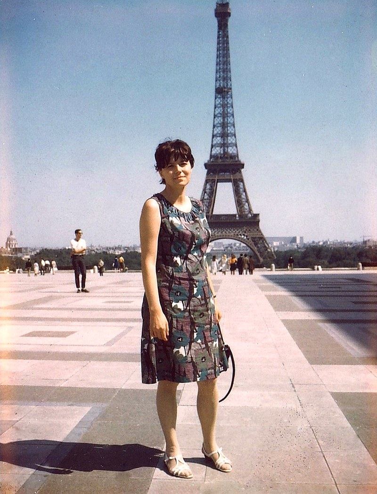
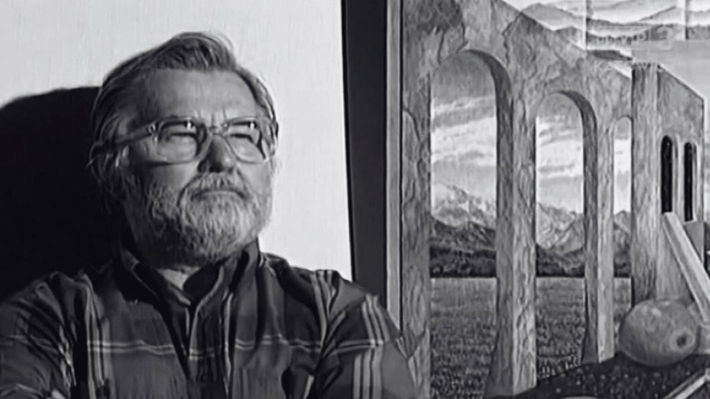

Dwoje artystów. Jedno życie wypełnione twórczością.
Irena malowała obrazy pełne ekspresji i koloru,
Józef tworzył scenografie, obrazy, grafiki i słowo.
Razem — zostawili po sobie coś trwałego.

Irena Porębska-Krupa
malarka · rysowniczka · pisarka
Urodzona w 1934 roku w Sosnowcu. Studia ukończyła w 1959
w pracowni prof. Hanny Rudzkiej-Cybisowej. Uprawiała malarstwo
metaforyczne o silnej ekspresji formy i koloru. Brała udział
w licznych wystawach krajowych i regionalnych. Prace
w galeriach i zbiorach prywatnych w Polsce i zagranicą.
Była starszą siostrą Jerzego Porębskiego — znanego doktora
oceanografii, muzyka i legendy polskiej szanty.
Urodzony w 1931 roku w Radlinie–Biertułtowach. Dyplom
Akademii Sztuk Pięknych w Krakowie (1957). Od powstania
Telewizji Katowice w grudniu 1957 pracownik etatowy — operator
kamery, scenograf, od 1960 główny scenograf. Po zwolnieniu
13 grudnia 1981 poświęcił się malarstwu — Pejzaże Sceniczne,
malarstwo abstrakcyjne, grafika komputerowa, fotografika.
W ostatnich latach autor krótkich opowiadań, bajek i wspomnień.
Odszedł Józef Krupa — współtwórca Telewizji Katowice i scenograf związany z Teatrem Telewizji
Adam Stanoś · TVP3 Katowice · 12 września 2025

fot. TVP3 Katowice
Jego wyobraźnia, wrażliwość i niezwykłe wyczucie plastyczne sprawiały, że realizacje Teatru Telewizji nabierały niepowtarzalnego charakteru. Na antenie TVP Katowice można było zobaczyć spektakle, przy których tworzył scenografię. Wspominamy śp. Józefa Krupę, który nadawał kształt powstającemu oddziałowi Telewizji Polskiej.
Do najważniejszych dzieł, do których scenografię tworzył Józef Krupa, można zaliczyć:
Stary portfel (1981, reż. Jan Błeszyński)
Pustelnia (1981, reż. Jan Błeszyński)
Noc świętojańska (1981)
Urlop zdrowotny (1979)
Jego prace wyróżniały się starannością i konsekwencją w budowaniu nastroju. Był artystą, który rozumiał, jak wielką rolę odgrywa przestrzeń sceniczna w opowieści teatralnej i telewizyjnej. Dzięki niemu widzowie mogli przenieść się w świat pełen detali, które do dziś pozostają w pamięci tych, którzy mieli okazję oglądać spektakle z jego udziałem.
Scenografie Józefa Krupy współtworzyły najważniejsze inscenizacje Teatru Telewizji realizowane w Katowicach w latach 70. i 80. To właśnie dzięki takim twórcom jak on, ośrodek katowicki zasłynął jako miejsce odważnych poszukiwań artystycznych i ciekawych adaptacji literatury.
Choć odszedł, jego dorobek pozostaje żywy w archiwach telewizji i w pamięci współpracowników.
{kind=link}